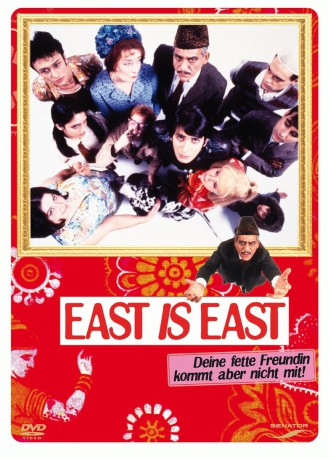

#11345 East Is East
Auszeichnungen: 1 BAFTA-Awards gewonnen
 
 IMDB-Wertung: 6.9 / 10
IMDB-Wertung: 6.9 / 10  Tomatometer: 78
Tomatometer: 78  Metascore: 74
Metascore: 74 
Salford, Nordengland 1971. George Khan ist stolzer Besitzer eines Fish'n'Chips-Ladens und ebenso stolzer Pakistani. Seine sieben Kinder nennen ihn "Dschingis", was durchaus nicht immer liebevoll gemeint ist. Denn Despot George versucht mit strenger Hand, seine Nachkommen zu guten Moslems zu erziehen. Meistens werden seine Züchtigungsversuche jedoch schon im Ansatz von seiner englischen Frau Ella zunichte gemacht. Sie hat bei aller Liebe zu ihrem Mann nämlich schon erkannt, dass die Moderne nicht mehr aufzuhalten ist...
Jahr: 1999
Dauer: 90 Minuten
FSK: 6
Land: England Studio: Senator FilmTonspuren:
Untertitel:
Auflösung: 1080p (1920x1080) Größe: 4730 MB
Genre: Drama, Komödie
Regisseur: Damien O'Donnell
Drehbuch: Ayub Khan-Din, Ayub Khan-Din
Soundtrack: Deborah Mollison
Darsteller:
 Om Puri als George Khan
Om Puri als George Khan- Linda Bassett als Ella Khan
 Archie Panjabi als Meenah Khan
Archie Panjabi als Meenah Khan Emil Marwa als Maneer Khan
Emil Marwa als Maneer Khan- Chris Bisson als Saleem Khan
 Jimi Mistry als Tariq Khan
Jimi Mistry als Tariq Khan- Lesley Nicol als Auntie Annie
- Emma Rydal als Stella Moorhouse
- Ruth Jones als Peggy
- John Bardon als Mr. Moorhouse
- Gary Damer als Earnest Moorhouse
 Gary Lewis als Mark
Gary Lewis als Mark Roger Morlidge als Fat Twat
Roger Morlidge als Fat Twat- Saikat Ahamed als Zaid
 Albert Moses als
Albert Moses als - Jimmi Harkishin als
- Preeya Kalidas als
- Muzz Khan als
- Jordan Routledge als Sajid Khan
- Raji James als Abdul Khan
- Ian Aspinall als Nazir Khan
- Ben Keaton als Priest
- Kriss Dosanjh als
- Rosalind March als
- Kaleem Janjua als
- Ralph Birtwell als Doctor
- Madhav Sharma als Mr. Shah
- Bruce McGregor als Bouncer
- Margaret Blakemore als
- Thierry Harcourt als
- Leena Dhingra als Mrs. Shah
- Tallat Nawaz als
- Sharmeen Rafi als
- Blake als
- Riot als
- Enid Dunn als
- Enoch Powell als
Datei: X:\1999\East Is East (1999, FSK6, 1920x1080).mkv seit 24.06.2019
Festplatte: Gemischt-01+Anime
 Es gibt insgesamt 81 Filme in der Gruppe '1999'
Es gibt insgesamt 81 Filme in der Gruppe '1999'